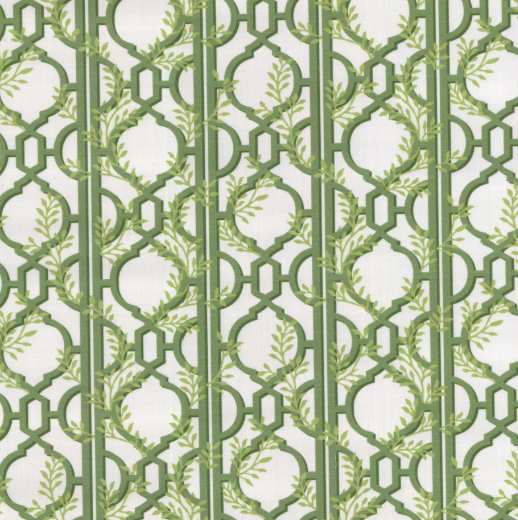
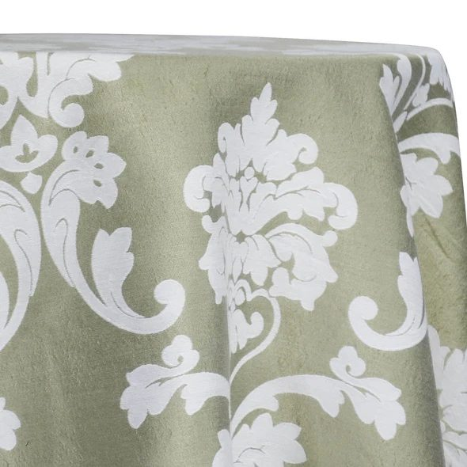

Madeline Damask — Kiwi
Specialty Linen
Madeline Damask
A woven damask whose tone-on-tone scrollwork catches the light as guests move through the room, dressing a table with quiet, heirloom formality. Layer it under simple china and low candlelight and the pattern does the styling for you.
Color 3
Color: Kiwi
Held in Current RMS in the Madeline Damask color family — Kiwi, Ivory and Black. Sizes are managed in inventory and confirmed with your quote.